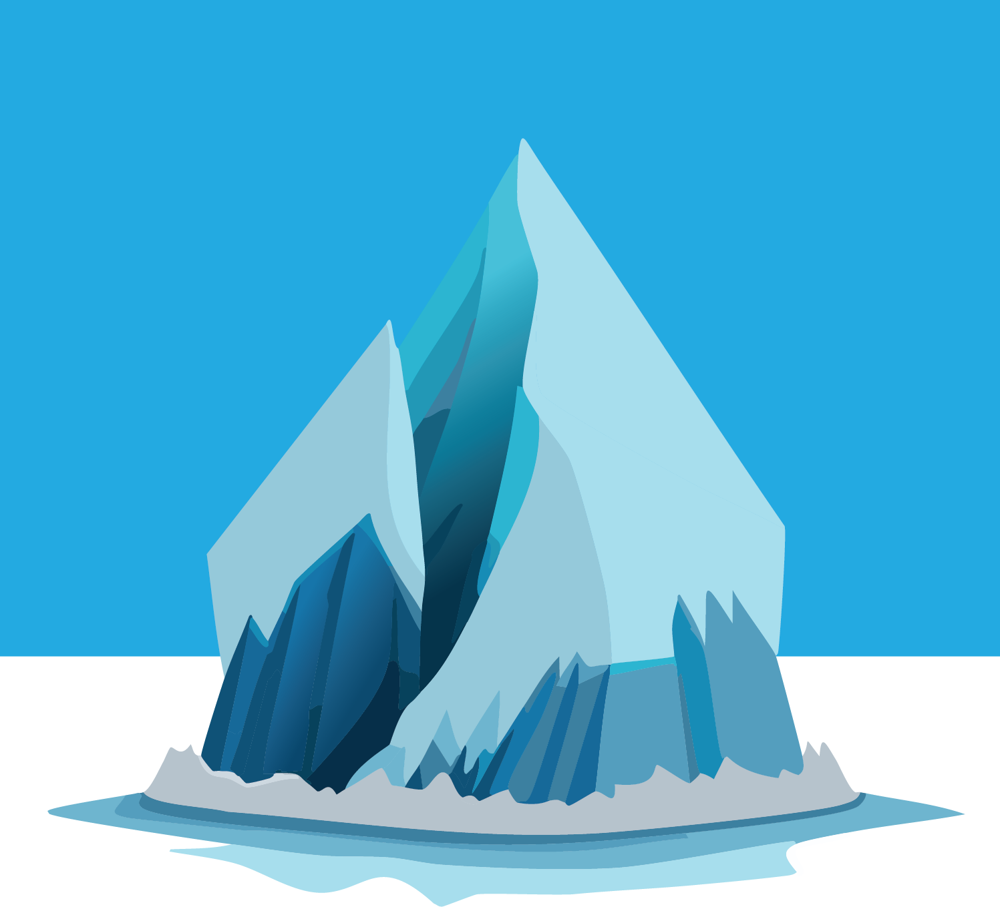
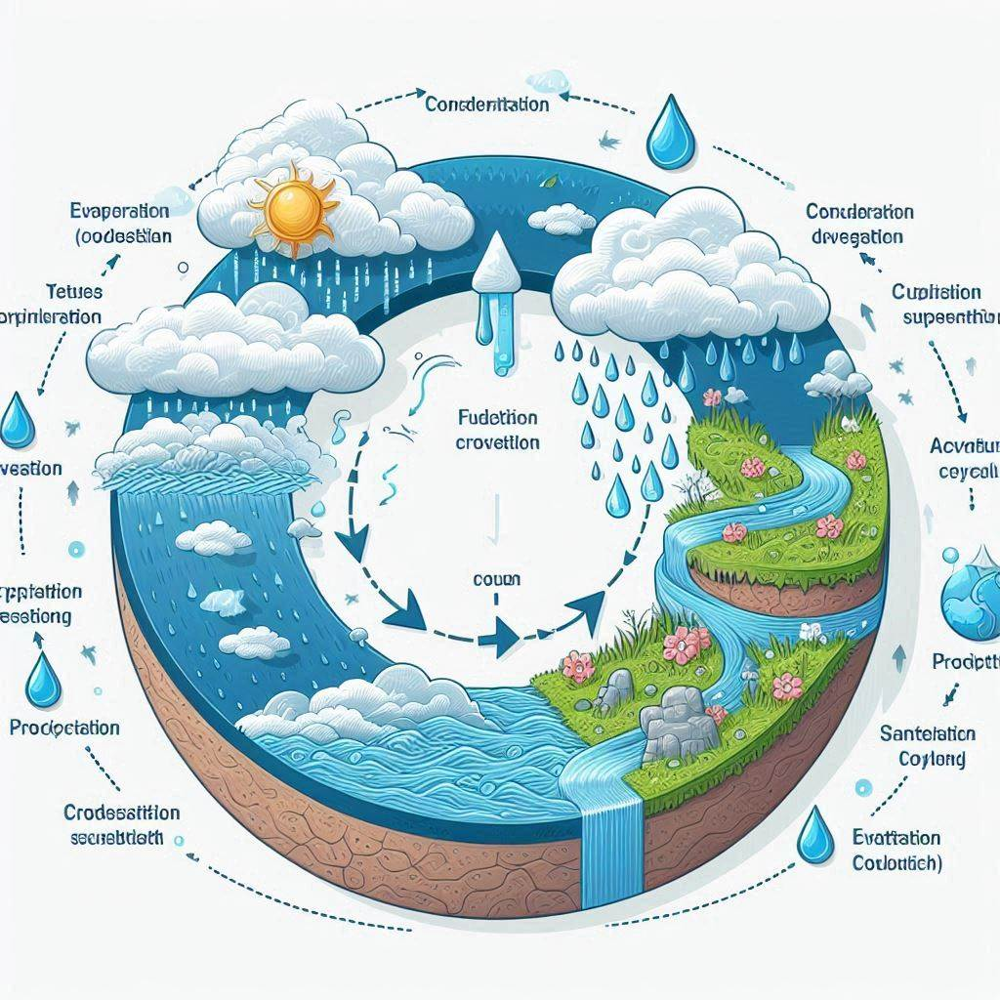
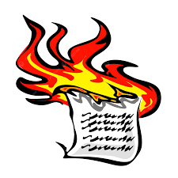
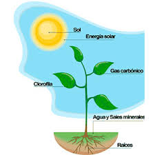
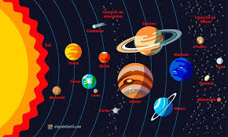
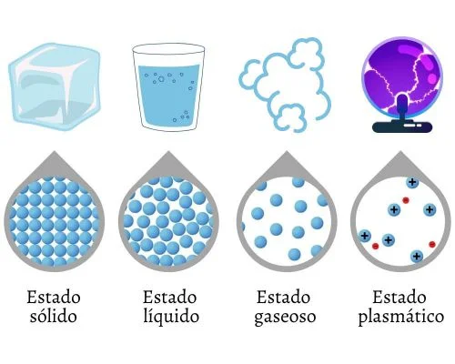
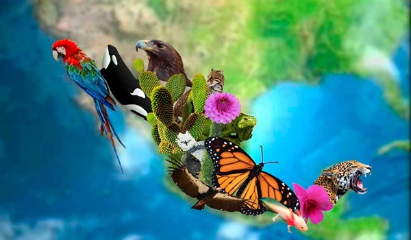
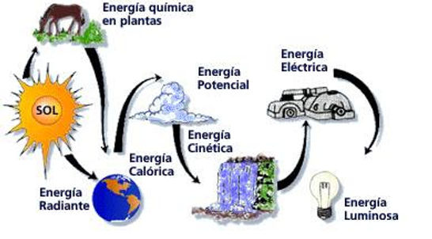
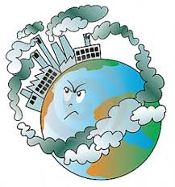

El pensamiento científico es un modo de razonamiento inaugurado por la aparición de las ciencias modernas. Se basa en el escepticismo, la observación y la experimentación, es decir, en la comprobación demostrable de las interpretaciones que hacemos del mundo y de las leyes que lo rigen.
Ejemplo: El deshielo del Ártico

1.-Observación y Formulación de Hipótesis Observación:
Los científicos observan que la cantidad de hielo marino en el Ártico parece disminuir con el tiempo2.-Hipótesis:
La hipótesis podría ser que el calentamiento global está causando una reducción en la extensión del hielo marino en el Ártico.3.-Recolección de Datos Satélites:
Se utilizan satélites equipados con sensores para medir la extensión y el grosor del hielo marino.
Estos satélites toman imágenes y recopilan datos de manera regular y continua. Estaciones Terrestres y Boyas: Estaciones terrestres en el Ártico y boyas flotantes también recopilan datos sobre la temperatura del aire y del agua, la salinidad y otras variables ambientales.
4.-Análisis de Datos Tendencias:
Los científicos analizan los datos recopilados para identificar tendencias a largo plazo en la extensión del hielo marino. Utilizan técnicas estadísticas para determinar si la reducción del hielo es significativa y para cuantificar la tasa de disminución.
Modelos Climáticos: Se utilizan modelos climáticos para simular el comportamiento del hielo marino bajo diferentes escenarios de cambio climático.
Estos modelos ayudan a entender los mecanismos detrás del deshielo y a predecir futuros cambios.
5.- Verificación y Revisión por Pares Publicación:
Los resultados del análisis se publican en revistas científicas.
Otros científicos revisan estos estudios para asegurar que la metodología y las conclusiones sean válidas.
Comparación: Los científicos comparan sus resultados con los de otros estudios para verificar la consistencia de los hallazgos.
6.-Comunicación de Resultados Informes y Artículos:
Los resultados se comunican a través de informes científicos, artículos en revistas especializadas y presentaciones en conferencias.
Divulgación Pública: También se utilizan medios de comunicación y plataformas digitales para informar al público y a los responsables de políticas sobre los hallazgos y sus implicaciones para el cambio climático.
7.-Aplicación y Uso de Conocimientos Políticas Climáticas:
Los datos y las predicciones sobre el deshielo del Ártico se utilizan para informar la formulación de políticas climáticas a nivel nacional e internacional.
Adaptación y Mitigación: La información sobre el deshielo del Ártico ayuda a desarrollar estrategias para mitigar los efectos del cambio climático y a adaptar las comunidades y ecosistemas vulnerables a estos cambios.
Ahora trabajemos en un tema elegido por nosotros:
-
El Ciclo del Agua: Estudiar el ciclo del agua, sus etapas y la importancia del mismo para el medio ambiente. Experimentos sobre evaporación y condensación.

-
Cambios Físicos y Químicos: Diferenciar entre cambios físicos y químicos mediante experimentos sencillos como la disolución de sal en agua y la combustión de papel.

-
La Fotosíntesis: Investigar cómo las plantas convierten la luz solar en energía. Experimentar con plantas en diferentes condiciones de luz y observar los resultados.

-
El Sistema Solar: Explorar los planetas, sus características y el movimiento de la Tierra alrededor del sol. Construcción de maquetas del sistema solar.

-
Los Estados de la Materia: Analizar los diferentes estados de la materia y sus propiedades. Realizar experimentos con cambios de estado como la fusión del hielo y la ebullición del agua.

-
Fuerzas y Movimiento: Estudiar las leyes del movimiento de Newton mediante actividades prácticas como lanzamientos de objetos y análisis de sus trayectorias.

-
La Biodiversidad y los Ecosistemas: Investigar la diversidad de especies en diferentes ecosistemas y su importancia. Realización de salidas al campo para observar y documentar la flora y fauna local.

-
La Energía y sus Transformaciones: Explorar las diferentes formas de energía (cinética, potencial, térmica) y cómo se transforman entre sí. Experimentos con péndulos y coches de juguete para entender la energía cinética y potencial.

-
Los Circuitos Eléctricos: Construir circuitos simples y entender el flujo de electricidad, la diferencia entre circuitos en serie y en paralelo, y la importancia de la seguridad eléctrica.

-
La Contaminación y el Cambio Climático: Estudiar las causas y efectos de la contaminación y el cambio climático. Realizar proyectos de investigación sobre soluciones sostenibles y cómo pueden reducir su huella ecológica.

Usando el siguiente formato en tu libreta:
1. Título del Análisis
- Título del problema o tema científico a analizar.
2. Contexto
- Descripción breve del contexto en el que se presenta el problema o tema.
- ¿Por qué es relevante o importante?
3. Pregunta de Investigación
- ¿Cuál es la pregunta principal que se está tratando de responder?
4. Hipótesis
- Planteamiento de posibles explicaciones o respuestas basadas en el conocimiento previo.
5. Metodología
- Descripción de los métodos utilizados para investigar el problema o tema.
- ¿Qué tipo de datos se han recogido?
- ¿Qué herramientas y técnicas se han empleado?
6. Análisis de Datos
- Presentación y análisis de los datos obtenidos.
- ¿Qué patrones, tendencias o relaciones se han observado?
7. Resultados
- Resumen de los hallazgos principales.
- ¿Qué se ha descubierto?
8. Discusión
- Interpretación de los resultados en el contexto del conocimiento existente.
- ¿Cómo se relacionan los resultados con la hipótesis inicial?
- ¿Qué implicaciones tienen?
9. Conclusiones
- Resumen de las conclusiones alcanzadas.
- ¿Qué se ha aprendido y cómo puede influir en futuras investigaciones o aplicaciones?
10. Referencias
- Citación de las fuentes y bibliografía utilizada para la investigación.
11. Posibles Límites y Futuras Investigaciones
- Descripción de las limitaciones del estudio y sugerencias para futuras investigaciones.